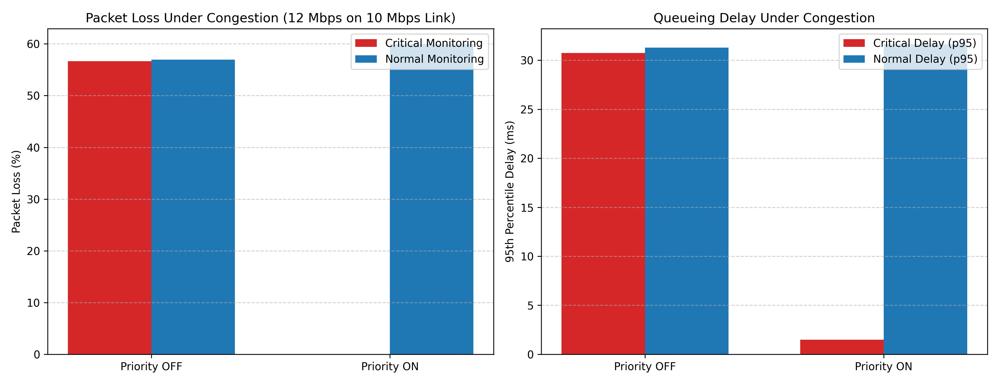
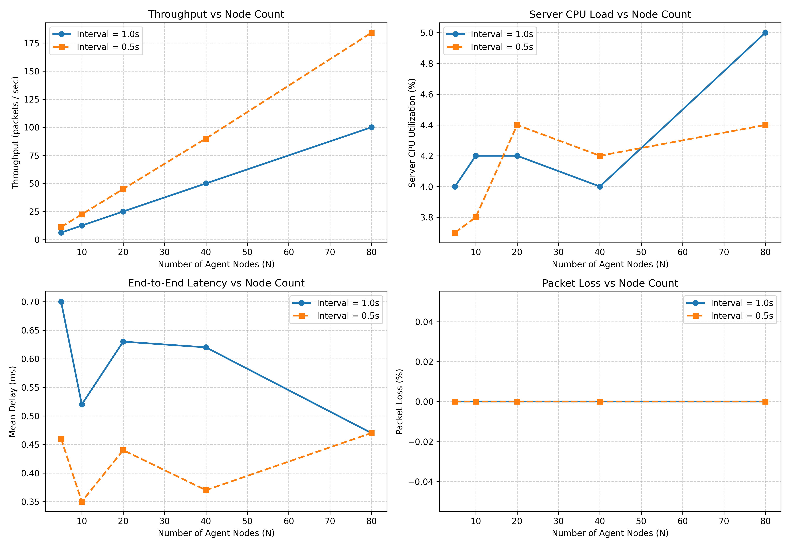

What are we actually building?
One-sentence pitch: Multiple machines periodically send health statistics to a central monitor over UDP; the monitor detects overload, missed reports and failures, while a programmable SDN switch can favor urgent health traffic when the network is busy.
No central visibility
Without reporting, an administrator may not know a host is overloaded, silent or unreachable until a service visibly fails.
UDP telemetry
Agents sample CPU, RAM, process count and network counters; they transmit periodic JSON datagrams to a server that tracks nodes and raises alerts.
SDN priority control
The agents mark urgent packets with DSCP 46; Ryu programs OpenFlow rules that select higher-priority OVS queues on a constrained link.
Know the difference between the two systems
- Application/data plane: Python agent and server communicate through ordinary UDP sockets. This continues to make sense even on localhost without Mininet.
- SDN control plane: Ryu talks to Open vSwitch through OpenFlow. It creates flow-table entries and reacts to switch statistics. Ryu does not decode health JSON in the current code.
- Emulation: Mininet creates virtual hosts, links and an OpenFlow-capable switch so you can demonstrate how the real application behaves in a controlled network.
The exact official rubric — 40 marks
The original SDN–Socket Programming Guidelines & Rubrics PDF specifies a Mininet + SDN controller + low-level TCP/UDP socket project, with multiple nodes, integration, repeatable tests, config and a final GitHub demo.
| Deliverable | Component | Marks | What to demonstrate from this repo |
|---|---|---|---|
| D1 | Problem understanding & architecture | 2 | Explain agent → UDP → server, controller → switch, and bottleneck link. |
| TCP/UDP socket implementation | 4 | Show socket(AF_INET, SOCK_DGRAM), sendto, recvfrom, JSON validation, multiple agents and errors. | |
| Mininet + SDN implementation | 4 | Show star topology, Ryu connection, OpenFlow 1.3 rules, OVS QoS queues. | |
| Socket–SDN integration | 3 | Show agent DSCP markings and matching OpenFlow queue selection on real traffic. | |
| Initial testing & demo | 2 | Show reports reaching server, node registration, alert and basic Mininet connectivity. | |
| D1 total | 15 | ||
| D2 | Complete application functionality | 4 | Normal + simulated metrics, monitoring, logs, dashboard, alerts, recovery. |
| Dynamic SDN functionality | 6 | Live switch statistic event → flow change; congestion throttle and/or quarantine; verify rules on OVS. | |
| Challenging scenario / robustness | 4 | Congestion, node crash, loss/silence, or rogue host; show expected system response. | |
| Performance evaluation & comparison | 5 | Meaningful before/after baseline; delay, loss, alert latency, repeated trials, reproducible charts. | |
| Documentation, demo & viva | 6 | Explain architecture, code paths, results, caveats; reproduce the end-to-end demonstration. | |
| D2 total | 25 | ||
| Overall | 40 | Read this guide with the actual project running. | |
Seven non-negotiable requirements from the rubric
- Low-level sockets, not merely an HTTP library.
- Appropriate client/server components and application-level protocol.
- Multiple communicating nodes, where applicable.
- A Mininet-based topology.
- Demonstrable SDN–socket integration.
- Controlled full-system execution with tests, config and repeatability.
- Complete GitHub code and documentation for the final demo.
Examiner trap: evidence is not the same as code existing
The repository implements Ryu event handlers and OpenFlow actions. But the default experiments/run_congestion_test.py uses a Python queue emulator, and the D2 showcase calls mocked switch objects. To prove the rubric's full Mininet–SDN integration, show actual OVS flow/queue statistics changing on a live Mininet run. See chapters 12, 14 and 15.
Architecture and a packet’s journey
sdn/topology.py, health_agent.py, monitor_server.py and ryu_controller.py. Diagram is conceptual, not a captured network trace.End-to-end trace of one overloaded node
- Sample.
StatsCollector.collect()produces CPU 95%, RAM 92%, process count 550 (simulated spike example). - Classify.
HealthAgent.is_critical()crosses a warning threshold, making a JSONALERTmessage withpriority="CRITICAL". - Mark + encode.
encode()validates JSON and its byte length;setsockopt(IP_TOS, 0xB8)marks DSCP 46;sendto()sends to server UDP 5005. - Forward. The OVS switch's high-priority OpenFlow rule matches IPv4+UDP destination 5005+DSCP46 and selects queue 2 on output, when its QoS configuration is active.
- Receive. Server's non-blocking socket receives the datagram,
decode()validates it, andNodeRegistry.process_packet()updates node state, delay and sequence tracking. - Decide.
AlertEngine.evaluate_report()compares each metric with warning and critical thresholds; for CPU 95, it generates aCRITICALalert (subject to alert state/cooldown). - Observe. Server writes report/alert CSV files and the optional HTTP dashboard exposes current status via
/api/status.
Computer networking concepts you must know
| Layer / mechanism | Job in this project | Concrete example |
|---|---|---|
| Application (L7) | Defines meaning of fields. | JSON HEALTH and ALERT with sequence, timestamp and metrics. |
| Transport (L4) | Delivers independent datagrams to destination port. | UDP port 5005, sendto and recvfrom. |
| Network (L3) | Addresses endpoints and carries DSCP marking. | IPv4 10.0.0.2 → 10.0.0.100; DSCP 46. |
| Link (L2) | Switches Ethernet frames using MAC addresses/flows. | Open vSwitch s1 and Ryu learning switch logic. |
| Control plane | Programs forwarding behavior separately from packet forwarding. | Ryu sends OpenFlow FlowMod. |
| Data plane | Actually forwards real monitoring packets. | OVS uses flow table and selected HTB queue. |
UDP versus TCP (be ready to justify the choice)
UDP — chosen
- Connectionless; no handshake or transport retransmission.
- Small 8-byte transport header; low send overhead.
- Messages may be lost, duplicated or reordered.
- Application can implement sequence tracking, timeouts and periodic fresh reports.
- Good fit for fast periodic telemetry when stale measurements have low value.
TCP — not used for telemetry here
- Connection-oriented, ordered byte stream with reliability.
- Handshake, acknowledgements, retransmission, congestion control.
- May delay new data behind old data (head-of-line blocking).
- Helpful for reliable logs/configuration, but would not directly exercise the UDP sequence/loss logic used in this code.
Socket and concurrency basics
AF_INET= IPv4 address family;SOCK_DGRAM= datagram socket (UDP).bind((host, port))makes the server receive on a local address/port;0.0.0.0listens on all local IPv4 interfaces.sendto(data,(ip,port))does not require a connection;recvfrom(buffer)returns data and sender address.select.select()waits for socket readability without a blockingrecvfromloop. One server can handle multiple agents on one UDP port.- Threads are used by the demo/tests, dashboard and benchmark runners; the production server loop itself processes incoming datagrams sequentially.
time.time()is a wall clock for timestamps;time.monotonic()is better for elapsed-time scheduling.
Key SDN vocabulary
- SDN (Software-Defined Networking)
- Separates programmable control decisions from forwarding hardware/software. Here the controller is Ryu; the datapath is OVS.
- OpenFlow 1.3
- Protocol and match/action model used by Ryu to control the switch. A flow entry has match fields, priority, counters, timeouts and instructions/actions.
- Mininet
- Linux-based network emulator using namespaces, virtual Ethernet links, traffic control and virtual switches; it is not a physical multi-machine deployment.
- Open vSwitch (OVS)
- Programmable virtual switch. It applies flow rules and can use HTB egress QoS queues configured with
ovs-vsctl. - QoS, queueing and congestion
- When input demand exceeds link capacity, packets wait or drop. Priority scheduling can reduce delay/loss for important traffic, potentially at the expense of other classes.
- DSCP and IP_TOS
- DSCP uses six upper bits of the IPv4 DS field. Expedited Forwarding is DSCP 46; placing it in
IP_TOSgives46 << 2 = 184 = 0xB8(ECN bits zero). - HTB (Hierarchical Token Bucket)
- Linux traffic-control scheduling mechanism; OVS queues can configure minimum and maximum rates at an egress port.
- Flow priority
- Higher OpenFlow numeric priority wins if multiple matching entries apply; this is distinct from JSON
priorityand from queue ID.
Understand every byte of the UDP message
Because UDP is just a datagram transport, the application defines its own versioned schema. Both sides import the same common.protocol, so the sender and receiver agree on validity.
{
"version": 1,
"type": "ALERT",
"node_id": "h2",
"seq": 5,
"sent_ts": 1730000000.123456,
"interval": 1.0,
"priority": "CRITICAL",
"metrics": {
"cpu_percent": 95.0,
"mem_percent": 92.0,
"process_count": 550,
"top_processes": [{"name":"worker_proc","cpu":57.0}],
"net": {
"bytes_sent": 5120, "bytes_recv": 10240,
"packets_sent": 50, "packets_recv": 100, "errors": 0
}
}
}| Field | Meaning / invariant |
|---|---|
version | Must equal integer 1; enables future protocol evolution. |
type | Must be HEALTH, HEARTBEAT or ALERT. |
node_id | Nonempty string identifying the reporting agent (not authenticated). |
seq | Integer ≥ 0, monotonically advanced by sender; detects gaps, duplicates, out-of-order and probable restarts. |
sent_ts | Positive Unix wall-clock timestamp when the payload was built. |
priority | Either NORMAL or CRITICAL; used by the agent to mark IP_TOS. |
interval | Optional report period in seconds; used by NodeRegistry for timeout estimation; not independently schema-validated. |
metrics | Required dictionary for HEALTH/ALERT; optional for HEARTBEAT. CPU and RAM 0–100, process count nonnegative integer, net counters nonnegative integers. |
MAX_DATAGRAM_SIZE = 1400
SUPPORTED_VERSION = 1
VALID_TYPES = {"HEALTH", "HEARTBEAT", "ALERT"}
def encode(msg, max_bytes=MAX_DATAGRAM_SIZE):
validate(msg)
raw = json.dumps(msg, separators=(",", ":")).encode("utf-8")
if len(raw) > max_bytes:
raise ProtocolError(...)
return raw
def decode(data, max_bytes=MAX_DATAGRAM_SIZE):
if not data:
raise ProtocolError(...)
if len(data) > max_bytes:
raise ProtocolError(...)
msg = json.loads(data.decode("utf-8"))
validate(msg)
return msgWhy the 1400-byte cap?
Keeping the application payload modest reduces the chance of IP fragmentation on an ordinary Ethernet MTU of 1500 bytes. The sender's JSON payload limit is 1400 bytes, while the server requests a 2048-byte receive buffer and explicitly decodes with that limit. A valid 1400-byte payload plus IPv4/UDP headers is typically under 1500 bytes; other encapsulation overhead can change this.
What happens if input is malformed?
decode() rejects empty bytes, too-large buffers, bad UTF-8, invalid JSON, wrong version/type, missing IDs, illegal metric types and out-of-range values by raising ProtocolError. MonitorServer.process_datagram() catches this, increases bad_packet_count, emits a rate-limited warning, and stays alive.
common/protocol.py.”HealthAgent and StatsCollector
Actual control flow
| Method | Explain it like this |
|---|---|
HealthAgent.__init__ | Validates node ID, port, interval; loads thresholds; creates collector and initial state. |
_init_socket | Creates IPv4 UDP socket; starts with Best Effort TOS. |
_set_tos | Uses setsockopt(IPPROTO_IP, IP_TOS, ...) if class changes; catches socket errors. |
is_critical | Returns true if CPU, RAM or process count reaches its configured warning boundary. |
build_payload | Increments sequence, timestamps sample, reads stats, produces HEALTH/ALERT; falls back to HEARTBEAT on collector error. |
send_report | Calls shared encode, sets TOS based on priority, sends datagram, handles network/validation errors. |
run | Periodic loop with time.monotonic(); can simulate stopping after N successful sends and optional recovery. |
stop | Marks loop stopped, closes the UDP socket and logs shutdown. |
# is_critical tests configured WARNING levels:
return (cpu >= cpu_warn) or (mem >= mem_warn) or (procs >= proc_warn)
priority = "CRITICAL" if self.is_critical(metrics) else "NORMAL"
msg_type = "ALERT" if priority == "CRITICAL" else "HEALTH"
raw = encode(payload)
tos = TOS_EF_CRITICAL if payload.get("priority") == "CRITICAL" else TOS_BEST_EFFORT
self._set_tos(tos)
self.sock.sendto(raw, (self.server_ip, self.server_port))Very important naming detail
The agent calls the packet CRITICAL as soon as any warning threshold is met (CPU ≥70, RAM ≥75, processes ≥300). The server's AlertEngine separately emits WARNING or CRITICAL using warning/critical thresholds. Therefore a DSCP-high-priority packet does not necessarily mean a server-side critical alert.
Metrics collector: real versus simulated
Real mode
psutil.cpu_percent(), psutil.virtual_memory(), psutil.process_iter() and psutil.net_io_counters() supply CPU%, RAM%, process count, top processes and cumulative network bytes/packets/errors.
The first instantaneous CPU sample can be imprecise. In Mininet, a process in a host namespace still generally reads the host kernel's machine-wide CPU/memory statistics, not isolated per-virtual-host resources.
Simulated mode
Four patterns: normal (low stable), spike (high every N ticks), ramp-up (increasing to limits), constant-high (sustained overload). Values are deterministic by tick rather than genuine OS load.
Topology starts h2 with spike while other agents default to normal.
if pattern == "spike":
if self._tick % self.spike_interval == 0:
cpu = 95.0
mem = 92.0
procs = 550
else:
cpu = 25.0 + (self._tick % 5)
mem = 35.0 + (self._tick % 5)
procs = 120 + (self._tick % 10)Why a HEARTBEAT on collection failure?
A failed metrics read should not automatically make the server think the node died. The agent can still send a lightweight HEARTBEAT with no metrics. It keeps the registry alive while separately signalling that telemetry is unavailable. Here, StatsCollector._collect_real() returns a collector_error field on complete failure, and build_payload() checks for it.
Why monotonic scheduling?
The loop maintains a target next_tick and computes remaining sleep. Unlike continually sleeping for exactly one interval after each send, this compensates for work time and resets if lag makes the target overdue. time.monotonic() is unaffected by user/system wall-clock changes.
MonitorServer + NodeRegistry
Server lifecycle
MonitorServer.__init__loads configuration, creates registry and alert engine, and opens report/alert CSVs with headers. It opens CSV files in"w"mode—starting a new server overwrites those output paths.start_socketcreates a UDP socket, setsSO_REUSEADDR, bindshost:portand makes it non-blocking.runexecutesselect(..., timeout=0.1); each datagram flows toprocess_datagram.- On each valid packet, decode, timestamp, update registry, evaluate alerts, log CSV and increment valid count.
- Every ~0.5 seconds, call
registry.check_liveness; periodically print dashboard, if configured. stopshuts down optional HTTP server, UDP socket and file handles.
readable, _, _ = select.select([self.sock], [], [], 0.1)
recv_ts = time.time()
if readable:
data, addr = self.sock.recvfrom(self.buffer_size)
self.process_datagram(data, addr, recv_ts)
if now_mono - last_liveness_check >= 0.5:
self.registry.check_liveness(current_ts=recv_ts)What the registry remembers per node
NodeState tracks status (UP/DOWN), last seen time, interval, last sequence, total received, estimated lost, duplicate/out-of-order/restart counters, last metrics, last delay, and a sliding list of up to 500 delay samples.
| Packet event | Implementation behavior | Example |
|---|---|---|
| First packet | Register new node UP, store first sequence. | Receive seq=1. |
| Forward gap | Add seq − last_seq − 1 to estimated lost packets. | After 2, receive 5 → 3 and 4 presumed missing. |
| Duplicate | Already seen sequence → increment duplicate counter. | Receive 5 twice. |
| Reordering | Older unseen sequence (seq < last_seq) → out-of-order counter, unless classified as restart. | Receive 4 after 5. |
| Restart | New small sequence (0 or 1), or a drop of more than 50 → reset sequence tracking. | Agent restarts and sends 1 again. |
| Timeout | No report beyond silence_multiplier × interval → NODE_DOWN. | Default 3 × 1 s = 3 s silence. |
| Resumption | A valid packet for DOWN node → NODE_RECOVERED and status UP. | Link reconnects. |
Events vs notifications
NodeRegistry.process_packet returns and/or calls back on NODE_REGISTERED, NODE_RECOVERED and NODE_RESTARTED. check_liveness emits NODE_DOWN. The server logs failures, writes a silence alert to CSV and prints recovery messages. No SMS/email delivery exists in this code.
Threshold alerts, cooldown and hysteresis
| Metric | Warning | Critical | Source |
|---|---|---|---|
| CPU % | 70 | 90 | thresholds.cpu_percent |
| Memory % | 75 | 90 | thresholds.mem_percent |
| Process count | 300 | 500 | thresholds.process_count |
| Estimated packet loss % | 5 | 20 | thresholds.packet_loss_percent |
State machine explained with CPU
CPU 45%
Below warning threshold; no new alert. If a prior WARNING exists, it is cleared once CPU goes below the warning minus hysteresis.
CPU 75%
At or above 70 but below 90: WARNING alert on state change or after the cooldown period.
CPU 95%
At or above 90: CRITICAL. A WARNING → CRITICAL transition generates a new alert immediately.
if value >= crit_th:
target_severity = "CRITICAL"
elif value >= warn_th:
target_severity = "WARNING"
else:
# Existing state may be retained or cleared using hysteresis.
...
if current_state != target_severity:
fire_alert = True
elif (current_time - last_fired) >= self.cooldown_seconds:
fire_alert = TrueWhy both cooldown and hysteresis?
- Cooldown (5 s): Avoids repeating the same alert every report; a severity transition is still immediately actionable.
- Hysteresis (2 percentage points / units): A WARNING should not rapidly disappear and return when CPU fluctuates around 70. E.g. after WARNING at 70+, 69 may remain warning; below 68 clears it.
- Per-node and per-metric state: States are keyed by
(node_id, metric); last fired time is keyed also by severity. - Important nuance: The code drops CRITICAL to WARNING once the value is below critical but still at/above warning; its hysteresis does not protect that upper downgrade symmetrically.
trigger_ts is the agent report's send timestamp, not a separately instrumented threshold-crossing time. Thus measured alert latency largely reflects transit/processing and clock accuracy, not the full time from when a real-world overload first began.
Ryu controller, OpenFlow rules and dynamic mitigation
This is the most important D2 technical area: the official rubric assigns 6 marks to dynamic SDN. Understand both the proactive rules installed at switch connection and the reactive flow modifications issued after stats.
Controller event lifecycle
HealthMonitorSDNControllersubclassesRyuAppand setsOFP_VERSIONS = [OFP_VERSION]for OpenFlow 1.3.- Ryu sees
EventOFPSwitchFeaturesinCONFIG_DISPATCHERand callsswitch_features_handler. - It installs a table-miss rule (priority 0) to send otherwise-unmatched traffic to the controller.
- If
sdn.priority_enabledis true, install three proactive QoS classifiers with numeric OpenFlow priorities 100, 50 and 10. packet_in_handlerlearns source MAC → input port and either floods unknown destinations or installs basic L2 forwarding rules.- A Ryu
hub.spawngreen thread pollsOFPFlowStatsRequestandOFPPortStatsRequestevery 2 seconds. port_stats_reply_handlercompares byte counters over elapsed time; it can install/remove a dynamic queue-selection rule.
| Flow priority | Match | Action | Effect |
|---|---|---|---|
| 200 (dynamic) | IPv4 source host IP | Empty actions → DROP | Quarantine when explicitly invoked. |
| 100 | IPv4 + UDP dst 5005 + DSCP 46 | SetQueue(2) + NORMAL output | Protect urgent telemetry. |
| 80 (dynamic) | All IPv4 UDP | SetQueue(0) + NORMAL output | Demote UDP except packets matched by priority 100. |
| 50 | IPv4 + UDP dst 5005 + DSCP 0 | SetQueue(1) + NORMAL output | Normal monitoring unless the 80 rule overrides it. |
| 10 | IPv4 + any UDP | SetQueue(0) + NORMAL output | Other UDP best effort. |
| 1 (learned) | MAC addresses + input port | Output learned port | Basic L2 learning flow. |
| 0 | Match all | Send to controller | Table miss. |
match_crit = parser.OFPMatch(
eth_type=ether_types.ETH_TYPE_IP,
ip_proto=17, # UDP
udp_dst=self.mon_port, # 5005
ip_dscp=self.dscp_critical, # 46
)
actions_crit = [
parser.OFPActionSetQueue(queue_id=2),
parser.OFPActionOutput(ofproto.OFPP_NORMAL),
]
self.add_flow(datapath, priority=100,
match=match_crit, actions=actions_crit)What is a FlowMod?
add_flow() builds OFPInstructionActions(OFPIT_APPLY_ACTIONS,...), wraps them in an OFPFlowMod, and sends the message with datapath.send_msg(mod). The switch then handles future matching packets locally without a round-trip to Python. Numeric rule priority decides which match wins.
Reactive congestion mitigation: the complete calculation
delta_sec = now - prev_ts
rate_bps = ((stat.tx_bytes - prev_bytes) * 8.0) / delta_sec
if rate_bps >= 8_000_000:
self.install_dynamic_throttle(datapath, port_no)
elif rate_bps < 4_000_000:
self.remove_dynamic_throttle(datapath, port_no)For example, if a port transmitted 1,200,000 additional bytes in 1 second, the measured rate is 9,600,000 bits/s = 9.6 Mbps, exceeding the hard-coded 8 Mbps trigger. The controller installs priority-80 UDP classification into Queue 0. It removes this rule only after the rate falls below 4 Mbps, creating a gap between activation and deactivation (a form of hysteresis).
Exact implementation limitation
The priority-80 rule matches all UDP, not merely non-monitoring bulk traffic. Therefore it also overrides priority-50 normal monitoring, while priority-100 critical monitoring remains protected. This can be defended as sacrificing less urgent traffic—but do not describe the match as “only background packets.” The controller also hard-codes 8/4 Mbps, even though the YAML defines bandwidth/utilization settings.
Quarantine and security
quarantine_host(datapath, host_ip,...) installs a priority-200 IPv4-source DROP rule with a 30-second default idle timeout and records the host IP. unquarantine_host() issues a strict delete for that rule. These are implemented methods, but the main controller code does not automatically detect attacker identity and call quarantine; the D2 demo explicitly invokes it with a mocked datapath.
Queue IDs versus guaranteed bandwidth
Queue 0 is best effort (configured 1 Mbps min), queue 1 normal monitoring (3 Mbps min), queue 2 critical monitoring (5 Mbps min) on the switch-to-server port. These are configured HTB minimum rates; showing that the queues are actually attached and their counters move under load is part of a strong live demo.
Mininet setup and OVS QoS
| Object | Configuration in the code |
|---|---|
| Controller | Remote Ryu at 127.0.0.1:6633. |
| Switch | One OVS switch s1 with protocols="OpenFlow13". |
| Server host | h_server at 10.0.0.100/24; UDP server on 5005. |
| Agent hosts | h1 ... hN, IPs 10.0.0.1 ... 10.0.0.N; default N=5. |
| Agent ↔ switch links | TCLink, bandwidth 100 Mbps, configured 1 ms delay. |
| Server ↔ switch link | TCLink, 10 Mbps bottleneck, configured 2 ms delay. |
| Server egress port | Assumed s1-eth1 in QoS setup. |
| Queues | linux-htb; q0 min 10%, q1 min 30%, q2 min 50% of bottleneck bandwidth. Max set to bottleneck. |
net = Mininet(controller=None, switch=OVSSwitch,
link=TCLink, autoSetMacs=True)
c0 = net.addController("c0", controller=RemoteController,
ip=controller_ip, port=controller_port)
s1 = net.addSwitch("s1", protocols="OpenFlow13")
server_host = net.addHost("h_server", ip="10.0.0.100/24")
server_link = net.addLink(server_host, s1, bw=10.0, delay="2ms")
for i in range(1, num_hosts + 1):
h = net.addHost("h" + str(i), ip="10.0.0." + str(i) + "/24")
net.addLink(h, s1, bw=100, delay="1ms")configure_ovs_qos() issues ovs-vsctl commands to create QoS and three Queue objects attached to a port. The program first runs a broad --all destroy QoS / Queue command: this is acceptable only in an isolated lab you control—do not run on a shared/production OVS instance.
Why the bottleneck matters
If agents each have a 100 Mbps path to one switch but the monitoring server's shared link is only 10 Mbps, background traffic can saturate that egress link. High-priority monitoring packets can then have shorter queue waits than best-effort packets when queue selection and scheduling are correctly configured.
sys.executable inside Mininet host shell commands; ensure that Python and its packages are visible in that execution environment. On many setups, the 100/10 Mbps and delays apply to virtual links, not physical internet bandwidth.How the dashboard, YAML and logging fit together
The web dashboard is a separate TCP/HTTP service
The project uses UDP for telemetry. The optional visual dashboard is a Python http.server-based HTTP server, usually launched on 8080 via --web-port 8080. Its browser calls GET /api/status every second; the server returns live registry data, packet counters and the last five alert records.
GET http://localhost:8080/api/status
{
"valid_packet_count": 12,
"bad_packet_count": 0,
"nodes": {
"h2": {
"status": "UP",
"last_seq": 12,
"total_received": 12,
"loss_percent": 0.0,
"avg_delay_ms": 0.7,
"metrics": {"cpu_percent": 95, "mem_percent": 92}
}
},
"active_alerts": []
}DashboardHTTPHandler.do_GET returns HTML at / and JSON at /api/status. A background thread runs serve_forever, while the UDP receive loop remains in the main server worker. The browser draws cards and metric bars using the JSON response.
active_alerts is actually populated from alert_history[-5:] (most recent records); it is not a filtered list of currently active alert states. The page contains fixed 10 Mbps / queue labels rather than querying OVS. Do not present those labels as live switch measurements.YAML controls central policy
load_config() calls yaml.safe_load and validates mandatory sections and invariants: port 1–65535; positive agent interval and silence multiplier; all thresholds present; and warning < critical. Invalid config raises ConfigError.
Defaults worth memorizing
- UDP:
0.0.0.0:5005 - Agent: 1-second interval
- Silence: 3 × interval
- Alert cooldown: 5 seconds
- Alert hysteresis: 2
- DSCP urgent: 46 / TOS 0xB8
- Ryu: port 6633
- SDN stats poll: 2 seconds
Logging
setup_logger() wraps standard Python logging in a RateLimitedLogger to prevent repeated parse/network warnings from flooding the console. RateLimitedLogger.should_log() uses a monotonic time window and a max burst (default 5 per second).
Not every YAML logging key is wired into every instantiated logger; inspect the call sites before claiming all settings affect every module.
Experiments, measurements, graphs and honest interpretation
The rubric requires multiple conditions, meaningful metrics and a suitable baseline. Explain not only the graphs, but how every sample was produced and whether the experiment used a real OpenFlow switch or a local software model.
| Experiment | Code path | Measures | Actual environment |
|---|---|---|---|
| Baseline delay | run_latency_test.py | One-way delay and alert timestamp delta (mean, std, p50, p95, p99, max). | Localhost threaded UDP agents/server, no Mininet. |
| Congestion ON vs OFF | run_congestion_test.py | Critical/normal drop estimates, delay, alert latency. | Python CongestedBottleneckProxy, not Ryu or real OVS queues. |
| Failure/recovery | run_failure_test.py | Time-to-detect (TTD), time-to-recover (TTR). | Localhost process stop and simulated silence/packet return. |
| Scale N=5..80 | run_scalability_test.py | Packets/s, packet loss estimate, delay, CPU, alert latency. | Threaded simulated agents on localhost; psutil.cpu_percent samples host-wide CPU. |
| Plots + wire overhead | plot_results.py | PNG figures and HEALTH/HEARTBEAT byte counts. | Analysis of generated CSV and sample encoded payloads. |
Benchmark definitions to memorize
What current results files say
Values below are already committed under results/. Treat them as stored outputs from previous experiments, not measurements verified during this guide's creation.
| Metric | Stored result | Correct interpretation |
|---|---|---|
| Latency baseline mean | 0.318 ms | From localhost simulation (results/latency_results_summary.csv). |
| Latency baseline p95 | 0.447 ms | 95% of logged delay samples at/below this time. |
| Congestion critical loss: OFF | 56.67% | Software proxy FIFO baseline with 12 Mbps generated background load. |
| Congestion critical loss: ON | 0.00% | Software proxy's high-priority queue protected critical reports in these stored runs. |
| Congestion critical delay p95: OFF → ON | 30.75 → 1.48 ms | Proxy-model comparison, not yet proof of live OVS QoS performance. |
| At 80 agents, 0.5-second interval | 184.2 packets/s; 0% estimated loss | Localhost threaded scenario in results/scalability_results.csv. |
| Sample HEALTH wire size | 420 bytes | 378-byte serialized sample JSON plus assumed 42-byte Ethernet/IPv4/UDP headers. |
| Sample HEARTBEAT wire size | 148 bytes | 106-byte sample JSON plus 42-byte headers. |


results/ folder.

What exactly happens in the congestion benchmark?
- A UDP proxy listens on localhost and forwards toward the real monitor server through an in-process queue.
- With priority OFF, all datagrams compete in one FIFO queue (30-packet capacity in
run_scenario). - With priority ON, JSON packets marked
CRITICALgo intoq_high; normal and background intoq_low. A transmit loop services high queue first. - A background sender aims for 12 Mbps of 1200-byte UDP payloads while emulated link capacity is 10 Mbps; the proxy sleeps to model serialization time.
- The script computes loss/delay and writes OFF/ON rows to CSV.
Be honest about methodology
The proxy reads the priority field inside JSON; it does not inspect IP DSCP and it never installs an OpenFlow rule. Its strict-priority queues are a useful controlled model, but they are not a measured Mininet/OVS experiment. For the strongest D2 evaluation, repeat OFF/ON load through live Mininet with actual Ryu/OVS counters and matching test conditions.
Failure study nuances
measure_crash_failure stops an agent, then restarts one with the same ID. The “link failure” and “partial loss” helpers stop sending datagrams to simulate silence; neither invokes a real Mininet link-down operation or randomly discards a subset of packets. The first packet in those helpers omits interval, so the registry uses its default 1-second interval and typically detects silence after roughly 3 seconds, regardless of the helper's nominal interval=0.5 argument.
Safeguards when presenting results
- Repeat each scenario, log mean and spread, keep test duration and offered load comparable.
- Show the baseline definition and whether an experiment is a mock, emulator, or live OpenFlow trial.
- Check missing-data behavior: latency, congestion and scalability scripts contain hardcoded fallback sample values if expected measurements are absent. Do not report fallback values as measured results.
- Graph/CSV claims must specify units and measurement origin. P95 tail delay can be more informative than mean under congestion.
Tests: what is verified, what remains to verify
There are 65 named pytest test functions in the tracked tests/ files at review time. Tests target schema checks, thresholds, lifecycle events, UDP robustness, agent behavior, local integration and Ryu controller logic with mocks.
| File / family | Understand these tests |
|---|---|
test_protocol.py | Round-trip encoding, missing ID, invalid JSON, invalid metrics, payload >1400 bytes, illegal sequence. |
test_agent.py & test_stats_collector.py | Invalid CLI params, TOS marking, simulated spikes, collection fallback, socket failures. |
test_node_registry.py | Registration, silence DOWN, recovery UP, sequence gaps, duplicates, reordering, restart. |
test_alert_engine.py & test_config_loader.py | Threshold boundaries, cooldown, hysteresis, invalid YAML/config. |
test_server_udp.py & test_robustness.py | Malformed bursts, concurrent senders, port collision, clean shutdown, clock skew. |
test_integration.py | Multiple localhost agents, alerts, agent kill/recovery, congestion proxy, server restart, 20-agent load. |
test_sdn_controller.py | Mocked OpenFlow features, proactive rules, throttle, quarantine, stats triggers. |
test_coverage_boost.py | Additional branches and parser/output coverage. |
python -m pytest tests/ -v \
--cov=common --cov=server --cov=agent \
--cov-report=term-missing
# Run narrower tests while learning:
python -m pytest tests/test_protocol.py -v
python -m pytest tests/test_node_registry.py -v
python -m pytest tests/test_alert_engine.py -vMagicMock datapath proves that your controller attempts to send a FlowMod. It does not independently prove that OVS installed the rule, the egress queue exists, real packets matched DSCP 46 or latency improved. Those require live Mininet verification.Live evidence checklist for full SDN marks
- Ryu started and logs a connected OpenFlow 1.3 switch.
- Mininet hosts can reach
h_serverand send UDP reports. ovs-ofctl -O OpenFlow13 dump-flows s1shows DSCP match and queue-selection actions.ovs-vsctl list qosandovs-vsctl list queueshow configured queues on the intended port.- Controller receives port-stats replies, logs utilization and installs/removes priority-80 rule under a reproducible load change.
- Actual switch flow/queue counters corroborate critical packet traffic while the server records metrics.
- Repeated baseline versus QoS trials use the same topology, offered load and report interval.
How to run and narrate a demo
Preparation and platform
Use Linux (Ubuntu is a common Mininet choice), ideally a Python environment supported by the installed Ryu/eventlet stack. The repository pins Ryu only when Python is below 3.11; Python 3.10 is a reasonable starting choice. Installing packages does not install or configure the whole OVS kernel/Mininet toolchain.
python3.10 -m venv .venv
source .venv/bin/activate
python -m pip install -r requirements.txt
# Ubuntu/Debian system binaries for the SDN part:
sudo apt update
sudo apt install -y mininet openvswitch-switch iperf
# Verify availability:
which ryu-manager
which mn
which ovs-vsctl
python -m pytest tests/test_protocol.py -vryu-manager, OVS and Mininet need compatible OS/Python versions and may require installation adjustments depending on the distribution. Verify your environment rather than assuming every command works on all laptops. A local Python-only demo can run without the Mininet binaries.Option A — safest first demo (no Mininet)
python server/monitor_server.py --host 127.0.0.1 --port 5005 \
--web-port 8080 --dashboard-interval 2python agent/health_agent.py --id h1 --server 127.0.0.1 \
--port 5005 --interval 1 --mode simulated --sim-pattern normal
# In another terminal:
python agent/health_agent.py --id h2 --server 127.0.0.1 \
--port 5005 --interval 1 --mode simulated --sim-pattern spikeOpen http://localhost:8080. Observe the live node cards, counters and alerts. To demonstrate a failure, stop h2 and note that its UP state changes to DOWN after the silence threshold; restarting h2 with the same ID returns it to UP. This proves the UDP app and registry behavior, not the SDN datapath.
Option B — full Mininet/Ryu demonstration
ryu-manager sdn/ryu_controller.py --ofp-tcp-listen-port 6633sudo -E python3 sdn/topology.py --hosts 5 --interval 1 \
--bw 10 --mode simulated
# In the Mininet CLI:
nodes
net
h1 ping -c 2 10.0.0.100
sh ovs-ofctl -O OpenFlow13 dump-flows s1
sh ovs-vsctl list qos
sh ovs-vsctl list queueTopology automatically launches the server on the Mininet server host and launches all agents in the virtual hosts. By default the topology runs an interactive Mininet CLI until exit, then calls net.stop() and mn -c.
config.yaml uses 6633. The installed version of ryu-manager must support the selected CLI flag. Run the Ryu controller before launching Mininet; if OVS fails to connect, inspect logs and process ports.Option C — interactive menu the repository provides
python demo.py
# Menu:
# 1 Tests 2 Local live demo
# 3 Failure and recovery 4 Web dashboard
# 5 D2 showcase 6 Benchmarks and plots
# 7 Stored CSV summary 8 Markdown guide pathdemo.py option 5 is a hybrid demonstration: congestion uses the local software proxy; reactive OpenFlow mitigation and quarantine use MagicMock objects. It does not start a real Mininet switch for those calls. Option 6 regenerates benchmark CSVs/figures (and may overwrite existing results).
A strong 5-minute oral walkthrough
- 0:00–0:40 — problem. State objective, why telemetry needs reliability awareness and timely critical reporting.
- 0:40–1:20 — architecture. Show host → UDP → OVS → server and Ryu control plane.
- 1:20–2:05 — sockets. Explain JSON schema,
sendto/recvfrom, sequence, validation and multi-agent registry. - 2:05–3:00 — SDN. Point to DSCP 46 and OpenFlow queue rule, then show actual switch flow/queue output if available.
- 3:00–3:40 — failure. Stop a reporting agent; show DOWN and then recovered UP.
- 3:40–4:25 — comparison. State OFF/ON experiment method and units without calling software-proxy results “measured OpenFlow performance”.
- 4:25–5:00 — close. Explain tests, implementation limits, next improvements, take viva questions.
Limitations the examiner may notice — and how to improve them
Knowing the boundaries of your implementation is often more impressive than pretending it is production-ready. These observations come from the actual source code.
| Current behavior / caveat | Good explanation or improvement |
|---|---|
Congestion comparison uses CongestedBottleneckProxy, not real OVS. | Label it a software-model baseline. Add real Mininet QoS ON/OFF experiments and export OVS flow/queue stats. |
Dynamic throttle match is broad (ip_proto=17). | Refine rule to exclude monitoring UDP port or match specifically known bulk sources/ports. Confirm normal monitoring is not inadvertently demoted. |
| 8/4 Mbps trigger hard-coded; YAML lists bandwidth/utilization values. | Read config in controller; derive thresholds from capacity and desired fraction; add per-port handling. |
| Quarantine method isn't wired to an automatic attacker detector. | Add traffic-anomaly policy and a trusted rule for who may be quarantined; log reasons and validate false positives. |
throttled_ports can outlive a timed-out flow. | Reconcile state against switch flow entries or avoid idle-timeout mismatch; reinstall upon continued congestion. |
| One-way delay uses independent wall clocks. | Synchronize via NTP/PTP for multi-host tests, or estimate RTT with echo and a defined methodology. |
| Agent calls packet CRITICAL at WARNING thresholds. | Separate transport importance from alert severity in naming or adjust classification policy. |
| Registry retains every seen sequence in an unbounded set. | Use a bounded sliding window and reconcile late-arriving packets in loss estimates. |
“Link failure” benchmark is silence, not link down. | Use Mininet link or Linux traffic control for live link failure and partial loss trials. |
| Plots can use hardcoded fallback data on empty samples. | Fail experiment loudly with invalid/empty data rather than silently inserting plausible numbers. |
Scalability CPU metric is psutil.cpu_percent() (system-wide). | Measure monitor-server process CPU via psutil.Process(pid).cpu_percent(), plus machine-wide metrics separately. |
| Dashboard's “active alerts” show last five history entries; queue banner is static. | Expose live active-state query and controller queue telemetry; label historical events separately. |
UDP node IDs are unauthenticated and browser renders node IDs into innerHTML. | For production, authenticate/report-sign clients, validate IDs and render untrusted strings as text rather than HTML. |
| Server opens CSV output in write mode every run. | Rotate or append logs safely; include run IDs and experiment metadata. |
Viva questions — click to reveal answers
Answer each out loud before opening it. Aim for “definition → where in our code → why it matters → limitation.” These cover both the official rubric and likely follow-ups.
A. Problem and system
01. What is the goal of the project?
02. What are the main components?
03. What is centralized in your design?
04. How many Mininet hosts are there by default?
--hosts.05. How does an application priority influence the network?
IP_TOS=0xB8 (DSCP 46). An OpenFlow rule matches DSCP and UDP port and assigns OVS queue 2.B. UDP, socket and protocol theory
06. Why choose UDP rather than TCP?
07. What is a socket?
socket(AF_INET, SOCK_DGRAM) represents an IPv4 UDP endpoint.08. What does UDP port 5005 do?
09. What is the difference between sendto and recvfrom?
sendto sends a datagram to an IP/port pair; recvfrom receives one datagram and returns its bytes and source address.10. How do you detect packet loss if UDP has no acknowledgements?
11. How do you handle duplicate and out-of-order packets?
12. Why use a timestamp in every report?
13. Why use JSON rather than raw binary?
14. What is the 1400-byte cap protecting against?
15. What happens on invalid JSON or CPU = 150?
common.protocol.decode/validate raises ProtocolError. MonitorServer drops that datagram, increments bad packet count, rate-limits the warning and keeps receiving.16. What is a HEARTBEAT for?
17. Can a server handle many agents on one UDP socket?
C. Monitoring and alerts
18. What does psutil collect?
19. What are the available simulated patterns?
20. What marks a node DOWN?
silence_multiplier × node.interval. Defaults yield about 3 seconds for a 1-second sender.21. How does the project detect recovery?
22. Define alert severity and agent priority.
23. Why hysteresis?
24. Why cooldown?
25. What is the difference between packet loss and node failure?
D. SDN, OpenFlow and Mininet
26. Define software-defined networking.
27. What is OpenFlow 1.3 used for?
28. What is Ryu?
RyuApp and handles switch-features, PacketIn and statistics reply events.29. What does a flow table entry contain?
30. What is the table-miss rule?
31. Why does controller need PacketIn?
32. What is DSCP 46?
0xB8 so the six DSCP bits equal 46 (with ECN bits zero).33. Why is IP_TOS=184 rather than 46?
46 × 4 = 184 = 0xB8.34. What do queues 0, 1 and 2 mean?
35. Does a higher OpenFlow priority mean the same thing as queue 2?
SetQueue(2) selects an egress scheduling queue. JSON priority is another independent application field.36. How is congestion detected dynamically?
8 × Δbytes / Δseconds, and installs a priority-80 UDP Queue-0 rule at ≥8 Mbps.37. When is congestion mitigation removed?
38. What traffic does priority-80 throttle match?
39. What is quarantine in this project?
quarantine_host. It is an available controller operation, but automatic rogue detection is not wired into the primary flow.40. What is Mininet and why use it?
41. Where is the bottleneck?
42. How do you confirm a QoS rule was really installed?
ovs-ofctl -O OpenFlow13 dump-flows s1, OVS Queue/QoS config, controller log and traffic/flow counters; a mocked call alone is insufficient.E. Performance, robustness and critical thinking
43. Explain the difference between mean and p95.
44. What are TTD and TTR?
45. How does the Priority OFF/ON benchmark work?
46. Does the congestion benchmark prove actual Ryu QoS performance?
47. What are the limitations of one-way latency?
48. How does this project scale with number of nodes?
1/interval reports per second. Tests vary 5–80 local agents; actual capacity also depends on CPU, link, packet size, disk writes, scheduler and environment.49. How does the project handle a malicious packet?
50. What would you improve first?
A practical plan to master this project
Do not memorize code line-by-line. Learn what each module receives, transforms and outputs, then practice tracing the same report end-to-end.
Pass 1 · Understand the core
- Read chapters 1–4: objective, rubric, architecture, UDP vs TCP, SDN.
- Open
common/protocol.py, thenhealth_agent.py. - Trace one CPU spike through
monitor_server.pyandalert_engine.py. - Run two localhost agents and make one stop and recover.
Pass 2 · Own the SDN story
- Read
topology.py, identify every host, switch, link and bottleneck. - Draw the matching rules and queue table without looking.
- Explain port-rate calculation, priority 80 and queue effects.
- Check live OVS rules if environment is available.
Pass 3 · Be able to defend evidence
- Read the four experiment scripts and inspect the CSV/plots.
- Explain baseline vs proposed approach and p95.
- Distinguish localhost proxy from actual OpenFlow evidence.
- Run pytest and understand at least one test from each family.
Pass 4 · Viva rehearsal
- Deliver the 30-second pitch without notes.
- Answer viva questions 1–50 out loud.
- Practice the 5-minute script while navigating the real project.
- Know three limitations and three realistic improvements.
Ready-for-evaluation checklist
- I can draw the full architecture and name each process/file.
- I can explain the UDP JSON fields, port 5005, encode/decode and 1400-byte cap.
- I can calculate sequence-gap loss, timeout and timestamp-based delay.
- I know the exact 70/90 CPU, 75/90 RAM and 300/500 process boundaries.
- I can show DSCP 46 = TOS 0xB8 and point to
SetQueue(2). - I can explain OpenFlow priorities 100/80/50/10 and how they interact.
- I know the 8 Mbps trigger, 4 Mbps clearing condition and 10 Mbps bottleneck.
- I can explain the difference between live SDN flows and a Python proxy benchmark.
- I can reproduce the localhost demo and identify what is required for live Mininet.
- I can explain p95, TTD/TTR, packet loss and limitations without exaggeration.
The entire project on one revision page
Elevator pitch
“UDP-based remote health monitoring of multiple simulated nodes. Agents sample and send timestamped JSON, the central server tracks status/loss/delay and alerts, and Ryu programs OpenFlow queues to prioritize DSCP-marked urgent reports on a Mininet bottleneck.”
Key ports and IPs
- Telemetry UDP 5005
- Ryu OpenFlow TCP 6633
- Optional browser HTTP 8080
- Server 10.0.0.100
- Agents 10.0.0.1...N
Critical numbers
- Protocol ≤ 1400 bytes
- Reports every 1 second by default
- DOWN after 3 × interval
- Alert cooldown 5 s; hysteresis 2
- DSCP 46 = TOS 0xB8
- Bottleneck 10 Mbps
- Dynamic trigger 8 Mbps; clear 4 Mbps
Rule priorities
- 200 quarantine (drop selected IPv4 source)
- 100 critical UDP/5005 DSCP46 → Q2
- 80 dynamic all UDP → Q0
- 50 normal UDP/5005 DSCP0 → Q1
- 10 other UDP → Q0
- 1 learned L2; 0 table miss
Core source map
common/protocol.py→ schemaagent/*→ collect, classify, sendserver/monitor_server.py→ UDP receiverserver/node_registry.py→ loss/livenessserver/alert_engine.py→ thresholdssdn/ryu_controller.py→ OpenFlowsdn/topology.py→ Mininet/queuesexperiments/*→ evaluation
Must-say caveats
- Agent “CRITICAL” priority starts at warning level.
- Proxy benchmark is not real Ryu/OVS QoS proof.
- Dynamic UDP priority-80 rule can demote normal monitoring.
- Cross-machine one-way delay needs clock synchronization.
- Unit tests with mocks ≠ live switch verification.